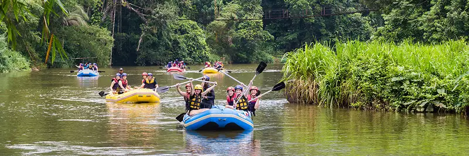
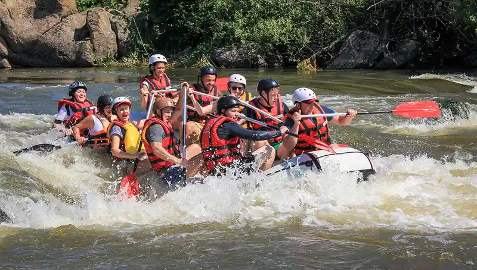
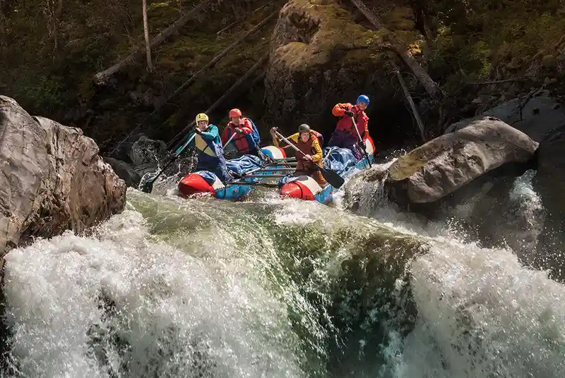

THREE WAYS TO MEET THE RIVER
Choose your current.
Every trip includes a trained guide, safety briefing, rafting equipment, and transportation from our river base.
Ask About Availability
Featured rafting trips

01 / BEGINNER · HALF DAY
Valley Discovery
A welcoming introduction to rafting with calm stretches, playful Class II rapids, and time to enjoy the landscape. Ideal for families and first-time paddlers.
- Approximately 4 hours
- Ages 8 and older
- Snack and dry bag included

02 / INTERMEDIATE · FULL DAY
Big Mallard Run
A full river day that balances scenic water with exciting Class III rapids. Crews practice precise paddling and work together through longer wave trains.
- Approximately 7 hours
- Ages 12 and older
- Riverside lunch included

03 / ADVANCED · FULL DAY
Canyon Blast
Steeper lines, technical Class IV water, and a narrow canyon make this our most demanding trip. Previous rafting experience and confident swimming are required.
- Approximately 8 hours
- Ages 16 and older
- Lunch and wetsuit included
AT A GLANCE
Compare the trips
Sample prices are per person. River levels and weather may affect routes and departure times.
READY TO PADDLE?
Tell us what kind of day you want.
Our team will help you select the route that matches your group’s ages, experience, and appetite for adventure.
Plan Your River Day